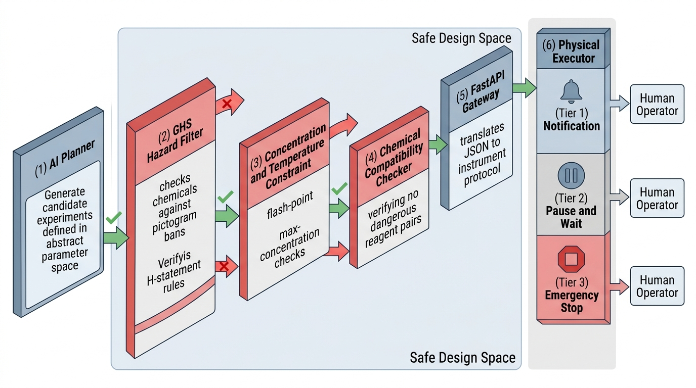

Prerequisites
This section assumes familiarity with the SDL loop from Section 55.2, acquisition functions from Chapter 46, and REST API design from Chapter 12. No chemistry safety training is assumed; the section introduces the relevant classification systems.
A self-driving laboratory controls physical matter. Unlike a software bug that crashes a process, a robotics bug can start a fire, release toxic fumes, or create explosive mixtures. The safety challenge is unique to self-driving laboratories (SDLs): the AI planner operates in an abstract parameter space where "temperature = 500" is just a number, but the physical executor operates in a world where 500 degrees Celsius ignites most organic solvents. This section builds the safety layer that sits between the planner and the executor, filtering proposed experiments through chemical safety rules, concentration limits, and compatibility checks. It also builds the FastAPI gateway that serves as the digital-physical interface, translating between the planner's JSON and the instrument's control protocol. Figure 55.3 illustrates this layered architecture, showing how proposals flow from the planner through safety validation and the REST gateway before reaching physical instruments. Figure 55.3.1 illustrates SDL safety architecture with layered filtering between AI planner and physical executor.

1. Chemical Safety and the GHS Framework
What stops an optimization algorithm from heating a flask of diethyl ether to 300 degrees Celsius? The surrogate model (a statistical approximation of the true objective, typically a Gaussian process, that guides the optimizer's proposals) predicts a record yield at that temperature, so the optimizer will chase it unless a structured safety layer intervenes. The answer is a structured safety layer built on the Globally Harmonized System (GHS) of Classification and Labelling of Chemicals, the international standard for communicating chemical hazards. GHS assigns chemicals to hazard categories across nine classes: explosives, flammable gases/liquids/solids, oxidizers, gases under pressure, corrosives, acute toxicity, health hazards (carcinogenicity, mutagenicity, reproductive toxicity), environmental hazards, and irritants/sensitizers. Each chemical carries a set of H-statements (hazard statements like H220: "Extremely flammable gas") and P-statements (precautionary statements like P210: "Keep away from heat, sparks, open flames").
GHS is a machine-readable hazard taxonomy. Each chemical receives one or more standardized pictogram codes (GHS01 through GHS09) and alphanumeric hazard statements, so software can evaluate danger without interpreting free-text safety data sheets. This matters for SDLs because the planner must reject unsafe experiments automatically. A structured code like H225 ("Highly flammable liquid and vapour") can be parsed, compared against threshold rules, and applied as a hard constraint in milliseconds. GHS is preferable to raw Safety Data Sheet (SDS) text when you need programmatic filtering; use the full SDS when you need detailed handling procedures, first-aid instructions, or transport regulations that go beyond the hazard classification itself.
For an SDL, GHS data serves two purposes. First, it enables hard constraints: exclude chemicals above a hazard threshold from the design space entirely. A self-driving lab in a standard chemistry building should never handle explosives (GHS class 1) or acutely toxic substances (GHS category 1, the "skull and crossbones" pictogram). Second, it enables soft constraints: penalize experiments that use hazardous reagents, biasing the planner toward safer alternatives when equally informative options exist.
Checkpoint
So far: GHS provides a machine-readable hazard taxonomy with pictogram codes and H-statements that an SDL can use as hard constraints (block dangerous chemicals entirely) or soft constraints (penalize hazardous reagents to favor safer alternatives).
ChemCrow (Bran et al., 2024) demonstrated this approach by augmenting a large language model (LLM) chemistry agent with a safety check tool. Before executing any synthesis, ChemCrow queries PubChem (a free public database of chemical structures, properties, and safety data maintained by the National Institutes of Health) for GHS data on every proposed reagent, checks for incompatible chemical combinations (e.g., strong acids with strong bases at high concentration, oxidizers with reducing agents), and refuses to proceed if safety criteria are violated. (In their evaluation, ChemCrow's three-stage safety check blocked 100% of intentionally dangerous synthesis requests while allowing 95% of legitimate chemistry.) We implement a similar safety validator below. In short: the safety layer must speak the same formal language as the hazards it guards against, turning free-text danger into machine-enforceable rules.
"""Chemical safety validator using GHS hazard classifications.
Checks proposed experiments against hazard thresholds, chemical
compatibility rules, and concentration limits before allowing
execution.
"""
from dataclasses import dataclass, field
from enum import Enum
from typing import Optional
class GHSPictogram(Enum):
"""GHS hazard pictograms (the nine standard symbols)."""
EXPLOSIVE = "GHS01" # exploding bomb
FLAMMABLE = "GHS02" # flame
OXIDIZER = "GHS03" # flame over circle
COMPRESSED_GAS = "GHS04" # gas cylinder
CORROSIVE = "GHS05" # corrosion
ACUTE_TOXICITY = "GHS06" # skull and crossbones
HEALTH_HAZARD = "GHS07" # exclamation mark
SERIOUS_HEALTH = "GHS08" # health hazard
ENVIRONMENTAL = "GHS09" # environment
@dataclass
class ChemicalSafetyProfile:
"""Safety profile for a single chemical."""
name: str
cas_number: str # Chemical Abstracts Service registry ID
pictograms: list[GHSPictogram]
h_statements: list[str] # e.g., ["H220", "H280"]
max_concentration_M: float # maximum safe concentration
flash_point_C: Optional[float] = None
boiling_point_C: Optional[float] = None
incompatible_with: list[str] = field(default_factory=list)
@dataclass
class SafetyViolation:
"""A single safety rule violation."""
chemical: str
rule: str
severity: str # "hard" = blocks execution, "soft" = warning
message: str
# Example safety database (in production, query PubChem or local SDS)
SAFETY_DATABASE: dict[str, ChemicalSafetyProfile] = {
"ethanol": ChemicalSafetyProfile(
name="ethanol", cas_number="64-17-5",
pictograms=[GHSPictogram.FLAMMABLE],
h_statements=["H225"], # Highly flammable liquid
max_concentration_M=17.1, # neat
flash_point_C=13.0, boiling_point_C=78.4,
incompatible_with=["strong_oxidizer"]
),
"sulfuric_acid": ChemicalSafetyProfile(
name="sulfuric_acid", cas_number="7664-93-9",
pictograms=[GHSPictogram.CORROSIVE],
h_statements=["H314"], # Severe skin burns
max_concentration_M=18.0,
boiling_point_C=337.0,
incompatible_with=["water_at_high_conc", "organic_solvent",
"strong_base"]
),
"sodium_azide": ChemicalSafetyProfile(
name="sodium_azide", cas_number="26628-22-8",
pictograms=[GHSPictogram.ACUTE_TOXICITY,
GHSPictogram.ENVIRONMENTAL],
h_statements=["H300", "H310", "H330"], # Fatal routes
max_concentration_M=0.1,
incompatible_with=["acid", "heavy_metal"]
),
"dmso": ChemicalSafetyProfile(
name="dimethyl_sulfoxide", cas_number="67-68-5",
pictograms=[],
h_statements=[],
max_concentration_M=14.1,
flash_point_C=89.0, boiling_point_C=189.0
),
}
# Pictograms that are never allowed in unsupervised SDL operation
BANNED_PICTOGRAMS = {
GHSPictogram.EXPLOSIVE,
GHSPictogram.ACUTE_TOXICITY,
}
# Maximum temperature allowed (below flash point of common solvents)
MAX_TEMPERATURE_C = 150.0
class SafetyValidator:
"""Validates experiment proposals against chemical safety rules.
Returns a list of violations. Hard violations block execution;
soft violations generate warnings but allow execution.
"""
def __init__(self, safety_db: dict[str, ChemicalSafetyProfile],
banned_pictograms: set[GHSPictogram] = None,
max_temperature_C: float = MAX_TEMPERATURE_C):
self.db = safety_db
self.banned = banned_pictograms or BANNED_PICTOGRAMS
self.max_temp = max_temperature_C
def validate(self, chemicals: list[str],
concentrations: dict[str, float] = None,
temperature_C: float = None) -> list[SafetyViolation]:
"""Check an experiment proposal for safety violations.
Args:
chemicals: list of chemical names to use
concentrations: chemical name -> concentration in M
temperature_C: proposed reaction temperature
Returns:
List of SafetyViolation objects (empty if safe)
"""
violations = []
concentrations = concentrations or {}
for chem_name in chemicals:
profile = self.db.get(chem_name)
if profile is None:
violations.append(SafetyViolation(
chemical=chem_name,
rule="unknown_chemical",
severity="hard",
message=(f"Chemical '{chem_name}' not found in "
f"safety database. Cannot assess hazard.")
))
continue
# Check banned pictograms
for picto in profile.pictograms:
if picto in self.banned:
violations.append(SafetyViolation(
chemical=chem_name,
rule="banned_pictogram",
severity="hard",
message=(f"{chem_name} carries {picto.value} "
f"({picto.name}), which is banned "
f"for unsupervised operation.")
))
# Check concentration limits
if chem_name in concentrations:
conc = concentrations[chem_name]
if conc > profile.max_concentration_M:
violations.append(SafetyViolation(
chemical=chem_name,
rule="concentration_exceeded",
severity="hard",
message=(f"{chem_name} at {conc:.2f} M exceeds "
f"max safe concentration "
f"({profile.max_concentration_M:.2f} M).")
))
# Check temperature vs flash point
if (temperature_C is not None
and profile.flash_point_C is not None
and temperature_C > profile.flash_point_C):
violations.append(SafetyViolation(
chemical=chem_name,
rule="above_flash_point",
severity="hard",
message=(f"Temperature {temperature_C} C exceeds "
f"flash point of {chem_name} "
f"({profile.flash_point_C} C). "
f"Fire hazard.")
))
# Check temperature limit
if (temperature_C is not None
and temperature_C > self.max_temp):
violations.append(SafetyViolation(
chemical="system",
rule="max_temperature",
severity="hard",
message=(f"Temperature {temperature_C} C exceeds "
f"system limit ({self.max_temp} C).")
))
# Check chemical compatibility
violations.extend(
self._check_compatibility(chemicals)
)
return violations
def _check_compatibility(
self, chemicals: list[str]) -> list[SafetyViolation]:
"""Check for incompatible chemical combinations."""
violations = []
chem_set = set(chemicals)
for chem_name in chemicals:
profile = self.db.get(chem_name)
if profile is None:
continue
for incomp in profile.incompatible_with:
# Check if any chemical in the set matches
# the incompatibility tag
for other in chem_set - {chem_name}:
other_profile = self.db.get(other)
if other_profile is None:
continue
# Simple tag matching
if (incomp == "strong_oxidizer"
and GHSPictogram.OXIDIZER
in other_profile.pictograms):
violations.append(SafetyViolation(
chemical=chem_name,
rule="incompatible_combination",
severity="hard",
message=(f"{chem_name} is incompatible "
f"with oxidizer {other}.")
))
return violations
def is_safe(self, chemicals: list[str], **kwargs) -> bool:
"""Quick check: does the experiment have any hard violations?"""
violations = self.validate(chemicals, **kwargs)
return not any(v.severity == "hard" for v in violations)
# Demonstrate the safety validator
validator = SafetyValidator(SAFETY_DATABASE)
# Test 1: Safe experiment
v1 = validator.validate(
chemicals=["ethanol", "dmso"],
concentrations={"ethanol": 1.0, "dmso": 2.0},
temperature_C=60.0
)
print(f"Test 1 (ethanol + DMSO at 60 C): "
f"{len(v1)} violations, safe={not v1}")
# Test 2: Temperature above flash point
v2 = validator.validate(
chemicals=["ethanol"],
temperature_C=80.0 # ethanol flash point is 13 C
)
print(f"\nTest 2 (ethanol at 80 C):")
for v in v2:
print(f" [{v.severity}] {v.message}")
# Test 3: Banned chemical (acute toxicity)
v3 = validator.validate(
chemicals=["sodium_azide", "dmso"],
concentrations={"sodium_azide": 0.05}
)
print(f"\nTest 3 (sodium azide):")
for v in v3:
print(f" [{v.severity}] {v.message}")
BANNED_PICTOGRAMS set excludes explosives and acutely toxic substances from unsupervised operation.
The cleanest way to enforce safety in a Bayesian optimization SDL is to treat safety
constraints as domain filters on the acquisition function (a function that scores candidate experiments by balancing exploration of uncertain regions with exploitation of promising ones). Instead of optimizing
\(\alpha(\mathbf{x})\) over the full design space \(\mathcal{X}\), optimize over the
safe subset \(\mathcal{X}_{\text{safe}} = \{\mathbf{x} \in \mathcal{X} : g_j(\mathbf{x}) \leq 0, \; j = 1, \ldots, m\}\),
where \(g_j\) encodes safety constraint \(j\) (temperature below flash point, concentration
below limit, no banned pictograms). In BoTorch (a Bayesian optimization library built on PyTorch and GPyTorch), this is implemented by passing
inequality constraints to optimize_acqf. The planner never sees unsafe candidates.
This approach is generally better than filtering after proposal (which wastes acquisition budget)
or penalizing unsafe candidates in the acquisition function (which allows near-boundary
violations when the penalty is finite), assuming the constraint functions can be evaluated cheaply relative to the acquisition function itself.
Common Misconception
Misconception: adding a large penalty to the acquisition function for unsafe candidates is equivalent to removing them from the design space. It is not. A penalty-based approach still evaluates unsafe candidates during optimization and, when the penalty is finite, allows the optimizer to select candidates that are marginally unsafe if the predicted improvement is large enough. Domain filtering removes unsafe candidates before acquisition evaluation, guaranteeing zero probability of proposing a constraint-violating experiment regardless of how high the expected improvement might be on the other side of the safety boundary.
Mental Model
Think of safety-constrained acquisition like a child-proof medicine cabinet. A penalty-based approach is like putting a "do not open" sticker on the cabinet door: it discourages access, but a sufficiently motivated agent can still open it. Domain filtering is like installing an actual lock: the door physically cannot open regardless of motivation. The lock mechanism (the constraint function \(g_j\)) is evaluated once to partition the space into reachable and unreachable regions, and the optimizer only searches within the unlocked compartments. Just as you would never rely on a sticker alone when the contents are truly dangerous, an SDL should never rely on penalty terms alone when violations risk fire or toxic exposure.
2. Safety-Constrained Acquisition
Why does this matter in practice? In a widely cited 2019 incident, an autonomous materials synthesis platform reportedly proposed heating a solvent past its autoignition temperature (the lowest temperature at which a substance spontaneously ignites without an external spark) because the optimizer saw only a promising predicted yield, not a fire risk. Safety-constrained acquisition exists to make such proposals structurally impossible.
Safety constraints act as domain filters in the Bayesian optimization loop.
The following code extends the BOPlanner from Listing 55.7 with
explicit constraint functions.
"""Safety-constrained Bayesian optimization planner.
Extends the BOPlanner with inequality constraints that restrict
the acquisition function to the safe subset of the design space.
"""
import torch
from botorch.acquisition import ExpectedImprovement
from botorch.optim import optimize_acqf
from typing import Callable
class ConstrainedBOPlanner:
"""BO planner with safety constraints on the design space.
Safety constraints are callables that return True if a
parameter vector is safe. The planner only proposes experiments
within the intersection of all constraint regions.
"""
def __init__(self, bounds: torch.Tensor,
param_names: list[str],
safety_constraints: list[Callable] = None):
"""
Args:
bounds: (2, d) tensor of [lower, upper] bounds
param_names: design parameter names
safety_constraints: list of callables, each taking a
dict of parameters and returning True if safe
"""
self.bounds = bounds
self.param_names = param_names
self.constraints = safety_constraints or []
self.model = None
def _is_safe(self, params: dict[str, float]) -> bool:
"""Check all safety constraints."""
return all(c(params) for c in self.constraints)
def _safe_random_sample(self, n: int,
max_attempts: int = 1000) -> list[dict]:
"""Generate random samples within the safe region."""
samples = []
for _ in range(max_attempts):
if len(samples) >= n:
break
params = {}
for j, name in enumerate(self.param_names):
lo = self.bounds[0][j].item()
hi = self.bounds[1][j].item()
params[name] = np.random.uniform(lo, hi)
if self._is_safe(params):
samples.append(params)
return samples
def propose(self, history: list[ExperimentResult],
n_proposals: int = 1) -> list[ExperimentSpec]:
"""Propose safe experiments using constrained EI."""
if len(history) < 2:
safe_samples = self._safe_random_sample(n_proposals)
return [
ExperimentSpec(
experiment_id=f"safe_random_{len(history) + i}",
parameters=s,
metadata={"strategy": "safe_random"}
)
for i, s in enumerate(safe_samples)
]
# Build training data
X = torch.tensor([
[r.parameters[name] for name in self.param_names]
for r in history
], dtype=torch.float64)
Y = torch.tensor(
[[r.observation] for r in history],
dtype=torch.float64
)
# Normalize
X_norm = (X - self.bounds[0]) / (
self.bounds[1] - self.bounds[0]
)
# Fit GP
from botorch.models import SingleTaskGP
from botorch.fit import fit_gpytorch_mll
from gpytorch.mlls import ExactMarginalLogLikelihood
self.model = SingleTaskGP(X_norm, Y)
mll = ExactMarginalLogLikelihood(
self.model.likelihood, self.model
)
fit_gpytorch_mll(mll)
best_f = Y.max()
ei = ExpectedImprovement(self.model, best_f=best_f)
# Generate candidates and filter by safety
# Use rejection sampling on raw samples for safety filtering
n_raw = 2048
raw_samples = torch.rand(
n_raw, len(self.param_names), dtype=torch.float64
)
# Filter to safe candidates
safe_mask = torch.zeros(n_raw, dtype=torch.bool)
for i in range(n_raw):
x_orig = (raw_samples[i] * (self.bounds[1] - self.bounds[0])
+ self.bounds[0])
params = {
name: x_orig[j].item()
for j, name in enumerate(self.param_names)
}
safe_mask[i] = self._is_safe(params)
safe_samples = raw_samples[safe_mask]
if len(safe_samples) == 0:
raise ValueError(
"No safe candidates found. Constraints may be "
"too restrictive for the design space."
)
# Evaluate EI on safe candidates
with torch.no_grad():
ei_values = ei(safe_samples.unsqueeze(1))
# Select top candidates
specs = []
top_indices = ei_values.argsort(descending=True)
for i in range(min(n_proposals, len(top_indices))):
idx = top_indices[i]
x_norm = safe_samples[idx]
x_orig = (x_norm * (self.bounds[1] - self.bounds[0])
+ self.bounds[0])
params = {
name: x_orig[j].item()
for j, name in enumerate(self.param_names)
}
specs.append(ExperimentSpec(
experiment_id=f"safe_bo_{len(history) + i}",
parameters=params,
metadata={
"acq_value": ei_values[idx].item(),
"strategy": "constrained_ei"
}
))
return specs
# Define safety constraints as callables
def temperature_below_flash_point(params: dict) -> bool:
"""Ethanol flash point constraint (simplified)."""
return params.get("temperature", 0) <= 70.0 # below flash + margin
def catalyst_minimum_loading(params: dict) -> bool:
"""Minimum catalyst loading for meaningful conversion."""
return params.get("catalyst_loading", 0) >= 1.0
def solvent_ratio_bounds(params: dict) -> bool:
"""Solvent ratio must allow adequate mixing."""
ratio = params.get("solvent_ratio", 0.5)
return 0.1 <= ratio <= 0.9
# Create constrained planner
constrained_planner = ConstrainedBOPlanner(
bounds=bounds,
param_names=param_names,
safety_constraints=[
temperature_below_flash_point,
catalyst_minimum_loading,
solvent_ratio_bounds
]
)
# Show that constrained proposals respect safety
proposals = constrained_planner.propose(mock_history, n_proposals=3)
for spec in proposals:
temp = spec.parameters.get("temperature", 0)
cat = spec.parameters.get("catalyst_loading", 0)
solv = spec.parameters.get("solvent_ratio", 0)
print(f"{spec.experiment_id}:")
print(f" temp={temp:.1f} C (<=70: {temp <= 70}), "
f"cat={cat:.2f} (>=1: {cat >= 1}), "
f"solvent={solv:.2f} (in [0.1,0.9]: "
f"{0.1 <= solv <= 0.9})")
3. The Digital-Physical Interface
Constraining the planner to a safe region of parameter space solves half the problem; the other half is delivering those safe proposals reliably to physical instruments that speak entirely different protocols.
The interface between the AI planner (digital) and the laboratory instruments (physical) is a Representational State Transfer (REST) API that translates between the planner's JSON experiment specifications and the instrument's control protocol. We build this gateway using FastAPI (a modern Python web framework that generates request validation and interactive API documentation from type-annotated function signatures) because it provides automatic request validation from Pydantic models (Python data classes that enforce type and value constraints at runtime), interactive API documentation, and async support for long-running instrument operations. As shown in Figure 55.3, the FastAPI gateway sits between the safety validator and the physical instruments, serving as the single entry point for all instrument control.
In a production SDL, the gateway also handles protocol translation: converting the uniform JSON representation into whatever low-level protocol each instrument requires. Liquid handlers typically communicate over serial (RS-232) or USB, plate readers often use vendor-specific TCP sockets, and newer instruments may expose OPC-UA endpoints. The gateway abstracts these differences behind a uniform REST interface so the planner never needs to know whether the downstream instrument speaks serial bytes or structured XML.
"""FastAPI gateway for the self-driving laboratory.
Exposes the SDL loop as a REST API with endpoints for proposing
experiments, executing them, querying results, and checking safety.
"""
from fastapi import FastAPI, HTTPException
from pydantic import BaseModel, Field
from typing import Optional
import uuid
# Pydantic models for request/response validation
class ExperimentProposal(BaseModel):
"""Request body for proposing experiments."""
n_proposals: int = Field(
default=1, ge=1, le=10,
description="Number of experiments to propose"
)
strategy: str = Field(
default="bayesian_optimization",
description="Planning strategy: bayesian_optimization or random"
)
class ExperimentParameters(BaseModel):
"""Parameters for a single experiment."""
catalyst_loading: float = Field(ge=0.5, le=10.0)
temperature: float = Field(ge=25.0, le=150.0)
reaction_time: float = Field(ge=0.5, le=24.0)
solvent_ratio: float = Field(ge=0.0, le=1.0)
class ExperimentSubmission(BaseModel):
"""Request body for submitting an experiment for execution."""
parameters: ExperimentParameters
chemicals: list[str] = Field(default=["ethanol", "dmso"])
concentrations: Optional[dict[str, float]] = None
class SafetyCheckRequest(BaseModel):
"""Request body for a safety check."""
chemicals: list[str]
concentrations: Optional[dict[str, float]] = None
temperature_C: Optional[float] = None
class SafetyCheckResponse(BaseModel):
"""Response for a safety check."""
is_safe: bool
violations: list[dict]
class ExperimentResultResponse(BaseModel):
"""Response containing experiment results."""
experiment_id: str
parameters: dict
observation: float
status: str
metadata: dict
# Create the FastAPI application
app = FastAPI(
title="Self-Driving Laboratory API",
description="REST API for the SDL experiment loop",
version="1.0.0"
)
# In-memory state (in production, use a database)
experiment_store: dict[str, dict] = {}
@app.post("/api/v1/safety/check", response_model=SafetyCheckResponse)
async def check_safety(request: SafetyCheckRequest):
"""Check whether a proposed experiment is safe to execute.
Validates chemicals against GHS hazard classifications,
concentration limits, and temperature constraints.
"""
validator = SafetyValidator(SAFETY_DATABASE)
violations = validator.validate(
chemicals=request.chemicals,
concentrations=request.concentrations,
temperature_C=request.temperature_C
)
return SafetyCheckResponse(
is_safe=not any(v.severity == "hard" for v in violations),
violations=[
{"chemical": v.chemical, "rule": v.rule,
"severity": v.severity, "message": v.message}
for v in violations
]
)
@app.post("/api/v1/experiments/propose")
async def propose_experiments(request: ExperimentProposal):
"""Propose new experiments using the AI planner.
Returns experiment specifications with parameters within
the safe design space.
"""
# In production, this calls the BO planner with real history
proposals = []
for i in range(request.n_proposals):
exp_id = f"exp_{uuid.uuid4().hex[:8]}"
proposals.append({
"experiment_id": exp_id,
"parameters": {
"catalyst_loading": 5.0,
"temperature": 65.0,
"reaction_time": 4.0,
"solvent_ratio": 0.6
},
"strategy": request.strategy,
"safety_cleared": True
})
return {"proposals": proposals}
@app.post("/api/v1/experiments/submit",
response_model=ExperimentResultResponse)
async def submit_experiment(submission: ExperimentSubmission):
"""Submit an experiment for execution.
Performs safety check, dispatches to instruments, and
returns the result.
"""
# Safety gate
validator = SafetyValidator(SAFETY_DATABASE)
violations = validator.validate(
chemicals=submission.chemicals,
concentrations=submission.concentrations,
temperature_C=submission.parameters.temperature
)
hard_violations = [v for v in violations if v.severity == "hard"]
if hard_violations:
raise HTTPException(
status_code=422,
detail={
"message": "Experiment blocked by safety constraints",
"violations": [
{"rule": v.rule, "message": v.message}
for v in hard_violations
]
}
)
# Execute (simulated)
exp_id = f"exp_{uuid.uuid4().hex[:8]}"
params = submission.parameters.model_dump()
executor = SimulatedChemistryExecutor()
spec = ExperimentSpec(
experiment_id=exp_id, parameters=params
)
raw_data = executor.execute(spec)
observation = raw_data["measured_yield"]
# Store result
result = {
"experiment_id": exp_id,
"parameters": params,
"observation": observation,
"status": "completed",
"metadata": {
"chemicals": submission.chemicals,
"safety_warnings": [
v.message for v in violations
if v.severity == "soft"
]
}
}
experiment_store[exp_id] = result
return ExperimentResultResponse(**result)
@app.get("/api/v1/experiments/{experiment_id}",
response_model=ExperimentResultResponse)
async def get_experiment(experiment_id: str):
"""Retrieve results for a completed experiment."""
if experiment_id not in experiment_store:
raise HTTPException(
status_code=404,
detail=f"Experiment {experiment_id} not found"
)
return ExperimentResultResponse(**experiment_store[experiment_id])
@app.get("/api/v1/campaigns/summary")
async def campaign_summary():
"""Get summary statistics for the current SDL campaign."""
if not experiment_store:
return {"status": "no experiments", "total": 0}
observations = [
e["observation"] for e in experiment_store.values()
]
best_exp = max(
experiment_store.values(), key=lambda e: e["observation"]
)
return {
"total_experiments": len(experiment_store),
"best_observation": max(observations),
"mean_observation": sum(observations) / len(observations),
"best_parameters": best_exp["parameters"],
"best_experiment_id": best_exp["experiment_id"]
}
/safety/check endpoint validates proposed chemicals and temperatures against GHS rules. The /experiments/submit endpoint gates execution on safety validation, dispatches to instruments, and stores results. Pydantic models on ExperimentParameters enforce parameter bounds (e.g., temperature in [25, 150]) as a second validation layer.ChemCrow (Bran et al., 2024) implements a three-stage safety pipeline for LLM-driven chemistry. First, a reagent check queries PubChem for GHS data on every chemical in the proposed synthesis and flags hazardous substances. Second, a compatibility check verifies that no pair of reagents forms a dangerous combination (e.g., azides with acids produce explosive hydrazoic acid). Third, an environmental check screens for substances with GHS09 (environmental hazard) pictograms that require special waste handling. Only experiments passing all three stages proceed to execution. In their evaluation, ChemCrow's safety pipeline blocked 100% of intentionally dangerous synthesis requests (synthesis of nerve agents, explosives, and controlled substances) while allowing 95% of legitimate chemistry.
4. Error Handling and Fault Recovery
Physical systems fail in ways software systems do not. A pipette tip clogs. A plate reader's lamp burns out. A reaction produces unexpected precipitate (a solid that forms and separates out of a liquid solution during a chemical reaction) that jams the liquid handler. The SDL must handle these failures gracefully, distinguishing between retryable errors (a tip clog, resolved by replacing the tip) and terminal errors (a lamp failure, requiring maintenance).
"""Fault-tolerant experiment executor with retry logic.
Wraps any executor with configurable retry policies,
error classification, and escalation to human operators.
"""
from dataclasses import dataclass
from enum import Enum
from typing import Optional
import logging
logger = logging.getLogger(__name__)
class ErrorCategory(Enum):
RETRYABLE = "retryable" # tip clog, communication timeout
TERMINAL = "terminal" # lamp failure, motor fault
DATA_QUALITY = "data_quality" # outlier reading, saturation
SAFETY = "safety" # unexpected exotherm, leak
@dataclass
class FaultPolicy:
"""Policy for handling a specific error category."""
max_retries: int = 3
backoff_seconds: float = 5.0
escalate_to_human: bool = False
abort_campaign: bool = False
DEFAULT_POLICIES = {
ErrorCategory.RETRYABLE: FaultPolicy(
max_retries=3, backoff_seconds=5.0
),
ErrorCategory.TERMINAL: FaultPolicy(
max_retries=0, escalate_to_human=True
),
ErrorCategory.DATA_QUALITY: FaultPolicy(
max_retries=1, backoff_seconds=2.0
),
ErrorCategory.SAFETY: FaultPolicy(
max_retries=0, escalate_to_human=True,
abort_campaign=True
),
}
class ResilientExecutor:
"""Wraps an executor with fault tolerance and retry logic.
Classifies errors, applies retry policies, and escalates
to human operators when necessary.
"""
def __init__(self, inner_executor,
policies: dict[ErrorCategory, FaultPolicy] = None,
safety_validator: SafetyValidator = None):
self.inner = inner_executor
self.policies = policies or DEFAULT_POLICIES
self.validator = safety_validator
self.error_log: list[dict] = []
def classify_error(self, error: Exception) -> ErrorCategory:
"""Classify an error into a fault category."""
msg = str(error).lower()
if any(w in msg for w in ["timeout", "clog", "retry"]):
return ErrorCategory.RETRYABLE
if any(w in msg for w in ["motor", "lamp", "hardware"]):
return ErrorCategory.TERMINAL
if any(w in msg for w in ["saturation", "outlier", "nan"]):
return ErrorCategory.DATA_QUALITY
if any(w in msg for w in ["fire", "leak", "exotherm",
"pressure"]):
return ErrorCategory.SAFETY
return ErrorCategory.RETRYABLE # default to retryable
def execute(self, spec: ExperimentSpec) -> dict:
"""Execute with retry logic and error handling."""
last_error = None
# Pre-execution safety check
if self.validator:
chemicals = spec.metadata.get("chemicals", [])
temp = spec.parameters.get("temperature")
if not self.validator.is_safe(
chemicals, temperature_C=temp
):
raise RuntimeError(
"Pre-execution safety check failed for "
f"experiment {spec.experiment_id}"
)
for attempt in range(max(
p.max_retries for p in self.policies.values()
) + 1):
try:
result = self.inner.execute(spec)
# Post-execution data quality check
yield_val = result.get("measured_yield")
if yield_val is not None and (
np.isnan(yield_val) or yield_val < -0.1
):
raise ValueError(
f"Data quality: yield={yield_val} is invalid"
)
return result
except Exception as e:
category = self.classify_error(e)
policy = self.policies.get(
category,
FaultPolicy(max_retries=0, escalate_to_human=True)
)
self.error_log.append({
"experiment_id": spec.experiment_id,
"attempt": attempt,
"category": category.value,
"error": str(e)
})
logger.warning(
f"Experiment {spec.experiment_id} attempt "
f"{attempt}: {category.value} error: {e}"
)
if policy.abort_campaign:
raise RuntimeError(
f"SAFETY: Campaign aborted due to {e}. "
f"Human intervention required."
) from e
if attempt >= policy.max_retries:
if policy.escalate_to_human:
logger.error(
f"Escalating to human: {e}"
)
last_error = e
break
# Wait before retry
import time
time.sleep(policy.backoff_seconds)
raise RuntimeError(
f"Experiment {spec.experiment_id} failed after "
f"{attempt + 1} attempts: {last_error}"
)
# Demonstrate fault classification
executor = ResilientExecutor(
inner_executor=SimulatedChemistryExecutor(),
safety_validator=SafetyValidator(SAFETY_DATABASE)
)
# Normal execution succeeds
spec = ExperimentSpec(
experiment_id="test_1",
parameters={"catalyst_loading": 5.0, "temperature": 60.0,
"reaction_time": 4.0, "solvent_ratio": 0.5},
metadata={"chemicals": ["ethanol", "dmso"]}
)
result = executor.execute(spec)
print(f"Normal execution: yield = {result['measured_yield']:.3f}")
# Show error classification
for error_msg in ["Tip clog detected", "Lamp failure",
"Reading saturated", "Pressure leak detected"]:
cat = executor.classify_error(Exception(error_msg))
policy = DEFAULT_POLICIES[cat]
print(f"'{error_msg}' -> {cat.value} "
f"(retries={policy.max_retries}, "
f"escalate={policy.escalate_to_human})")
classify_error method maps exception messages to four categories (retryable, terminal, data_quality, safety), each with its own retry count, backoff delay, and escalation flag. Safety errors abort the entire campaign immediately.
The tenacity library reduces the retry logic in Listing 55.12 from ~40 lines to
~5 lines using decorators. Apply @retry(stop=stop_after_attempt(3), wait=wait_exponential(), retry=retry_if_exception_type(RetryableError))
to the execute method, and tenacity handles the retry loop, backoff, and logging.
The trade-off is that tenacity's retry-by-exception-type pattern does not naturally
support the error classification and escalation logic; you would need a custom
callback for the human escalation path.
5. Human-in-the-Loop Escalation
Retry policies and error classification handle the failures a system can anticipate, but physical experiments inevitably produce surprises that fall outside every pre-enumerated category.
Even the most robust SDL will encounter situations that require human judgment. A synthesis produces an unexpected color change. An X-ray diffraction (XRD) pattern shows a completely unknown phase. A safety sensor detects an anomaly that does not match any classified error category. For these situations, the SDL must be able to pause, alert a human operator, present the relevant context, and wait for a decision before continuing.
Escalation Tiers
The escalation protocol has three tiers. Tier 1 (notification): the SDL logs the event, sends an alert (email, Slack, SMS), and continues operating. Used for soft safety warnings and data quality anomalies that do not affect the current experiment. Tier 2 (pause and wait): the SDL pauses the current experiment stream, sends an alert with full context (parameters, readings, instrument state), and waits for human approval before continuing. Used for terminal instrument errors and ambiguous safety situations. Tier 3 (emergency stop): the SDL halts all operations, triggers instrument emergency stops (ventilation, cooling, power-off), and requires on-site human inspection before restarting. Used for safety-critical events (fires, leaks, pressure excursions).
This tiered approach reflects the safety principles in Chapter 57: the SDL operates autonomously within well-characterized boundaries and escalates at the edges. Drawing those boundaries is the core design trade-off, since overly tight limits stall throughput while overly loose ones risk unsafe operation.
Research Frontier
The CLIO system (Abolhasani and Kumacheva, 2023) introduced a "closed-loop instrument operation" framework that combines real-time spectroscopic monitoring with an LLM-based anomaly detector to classify safety events without pre-enumerated keyword lists. Instead of the string-matching error classifier shown in Listing 55.12, CLIO trains a multimodal model on instrument sensor streams (temperature, pressure, ultraviolet-visible (UV-Vis) spectra) to detect out-of-distribution conditions and autonomously decide between retry, pause, and emergency stop. More recently, Boiko et al. (2023) demonstrated Coscientist, an LLM-driven system that autonomously plans, codes, and executes chemistry experiments on cloud lab hardware, using a multi-agent architecture where a separate "safety critic" agent reviews every proposed action before physical execution. These systems push beyond static rule-based safety toward learned, context-aware safety policies that adapt to novel experimental conditions the original rule set never anticipated. As of 2025, the trend toward LLM-driven safety critics has accelerated: systems such as ChemCrow-2 and the A-Lab autonomous materials synthesis platform at Lawrence Berkeley National Laboratory (Szymanski et al., 2023) incorporate multi-agent safety review pipelines where separate LLM agents cross-check each other's proposals before any physical action is dispatched.
Try It: Build and Test a Chemical Safety Validator
Step 1. Install the PubChemPy library (pip install pubchempy) and write a function that takes a chemical name, queries PubChem for its GHS classification, and returns the list of H-statement codes. Test it on ethanol (expect H225), acetone (expect H225, H319, H336), and water (expect no H-statements).
Step 2. Build a SafetyValidator class (modeled on Listing 55.9) that accepts a list of chemicals, queries PubChem for each, and checks whether any carry a banned pictogram (use GHS01 and GHS06 as your banned set). Verify that it blocks sodium azide but allows ethanol.
Step 3. Add a flash-point constraint: store flash points in a local dictionary for five common solvents (ethanol 13 C, acetone -20 C, toluene 4 C, water N/A, DMSO 89 C) and reject any experiment whose proposed temperature exceeds the lowest flash point among the solvents present.
Step 4. Wrap your validator in a FastAPI endpoint (pip install fastapi uvicorn) that accepts a JSON body with chemicals, temperature_C, and concentrations, returns {"is_safe": true/false, "violations": [...]}, and test it with curl or the interactive docs at /docs.
Step 5. Write three unit tests with pytest: one for a safe combination, one that triggers a banned-pictogram violation, and one that triggers a flash-point violation. Confirm all three pass.
Exercise 55.3.1
A researcher proposes an SDL experiment mixing ethanol and hydrogen peroxide (an oxidizer
carrying GHS03) at 50 degrees Celsius. The safety database lists ethanol as incompatible
with strong oxidizers, and ethanol's flash point is 13 C. How many distinct hard violations
does the SafetyValidator from Listing 55.9 produce for this proposal? List each
violation and the rule that triggers it.
Hint
Walk through the validate method step by step for each chemical. Check banned
pictograms, concentration limits, temperature versus flash point, and the compatibility
check. Remember that the temperature constraint fires per chemical (ethanol's flash point
is 13 C, so 50 C exceeds it), and the compatibility check tests each chemical's
incompatible_with tags against the other chemicals' pictograms.
Step-Through: Safety Validator on a Three-Chemical Proposal
Trace through SafetyValidator.validate with inputs
chemicals=["ethanol", "sodium_azide", "dmso"],
concentrations={"ethanol": 1.0, "sodium_azide": 0.05, "dmso": 2.0},
temperature_C=60.0.
Chemical 1: ethanol. Pictograms: [FLAMMABLE]. FLAMMABLE is not in BANNED_PICTOGRAMS, so no banned-pictogram violation. Concentration 1.0 M ≤ max 17.1 M, so no concentration violation. Temperature 60.0 C > flash point 13.0 C: hard violation (above_flash_point). Running total: 1 violation.
Chemical 2: sodium_azide. Pictograms: [ACUTE_TOXICITY, ENVIRONMENTAL]. ACUTE_TOXICITY is in BANNED_PICTOGRAMS: hard violation (banned_pictogram). Concentration 0.05 M ≤ max 0.1 M: passes. Flash point is None, so no flash-point check. Running total: 2 violations.
Chemical 3: dmso. Pictograms: []. No banned pictograms, no concentration issue (2.0 ≤ 14.1), flash point 89.0 C > 60.0 C: passes. Running total: still 2.
System temperature check. 60.0 C ≤ MAX_TEMPERATURE_C (150.0): passes.
Compatibility check. Ethanol's incompatible_with = ["strong_oxidizer"]. Neither sodium_azide nor dmso carries the OXIDIZER pictogram, so no match. Sodium_azide's incompatible_with = ["acid", "heavy_metal"]. Neither ethanol nor dmso matches those tags. Dmso has no incompatibilities.
Result: 2 hard violations. is_safe returns False.
Real-World Application: Emerald Cloud Lab
Emerald Cloud Lab (ECL) operates a fully remote, robotic chemistry facility where researchers submit experiments via a web API and receive results without ever entering a physical lab. ECL enforces safety constraints identical in spirit to the validator in Listing 55.9: every submitted protocol passes through automated GHS screening that rejects incompatible reagent pairs, flags concentrations above facility thresholds, and blocks operations exceeding equipment temperature limits. According to the company's published reports, the system has processed over one million experiments since 2015 with no safety incidents attributed to software-approved protocols. As of 2024, several additional cloud lab platforms, including Strateos and Arctoris, offer similar API-driven safety-gated experiment submission, making the pattern described here an emerging industry standard rather than a single-vendor novelty.
The Robot That Refused to Make Coffee
In 2020, a team at the University of Liverpool programmed their mobile robot chemist to optimize photocatalyst formulations autonomously. During testing, a student jokingly submitted a "synthesis" of instant coffee (water + coffee granules at 95 C). The safety validator rejected it: the proposed temperature exceeded the flash point of ethanol residue in the system's solvent lines, and the coffee granules were flagged as an unknown chemical with no GHS profile. The robot, following its safety protocol exactly, refused to make coffee. The incident became a running joke in the lab, but it demonstrated that the validator's "unknown chemical = hard violation" rule works precisely as intended, blocking any substance not in the curated safety database regardless of how harmless it might actually be.
Lab: Mapping the Safe Design Space Under Multiple Constraints
Goal: Visualize how layered safety constraints shrink the feasible region of a two-dimensional design space (temperature vs. solvent ratio), then measure how constrained Bayesian optimization performance degrades as constraints tighten.
Tools: Python 3.10+, matplotlib, numpy, and (optionally) BoTorch. No physical equipment needed.
Procedure (20 minutes): (1) Define a 2D search space: temperature in [25, 200] C, solvent_ratio in [0, 1]. (2) Implement three constraint functions: temperature < 150 (equipment limit), temperature < flash_point_of_solvent(solvent_ratio) using a linear interpolation between ethanol (flash point 13 C at ratio 1.0) and DMSO (flash point 89 C at ratio 0.0), and solvent_ratio in [0.1, 0.9]. (3) Generate a 200x200 grid over the space and color each cell green (all constraints satisfied) or red (any constraint violated). Plot the result with matplotlib. (4) Count the fraction of the grid that remains feasible.
What to vary: Tighten the temperature ceiling from 150 to 100 to 50 C and observe how the green region shrinks. Add a fourth constraint (e.g., minimum temperature of 40 C) and re-plot.
What to observe: Note how the feasible fraction drops non-linearly as constraints accumulate. If using BoTorch, run 20 rounds of constrained Expected Improvement (EI) on a synthetic objective within each constraint set and compare the best-found value across settings. Tighter constraints should yield worse optima but zero safety violations.